Ettu Nombu Perunnal 2026
✟ September 1 - September 8, 2026 ✟
Join us for the sacred Ettu Nombu Perunnal celebrations at St Mary's Salem Orthodox Syrian Church, Sooranad North. All are welcome to participate in the divine services.


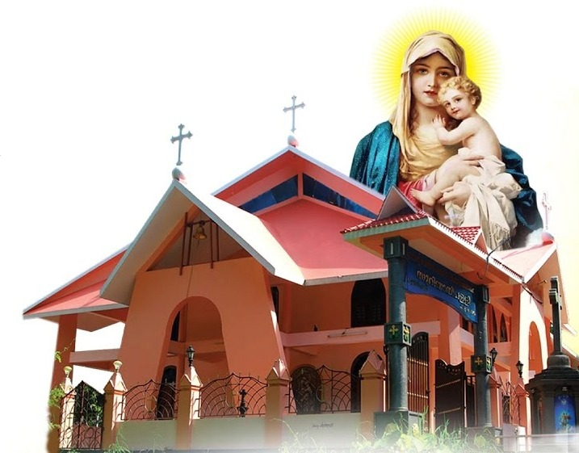
Sooranad North
"A Community United in Faith and Love"
A community of faith, hope, and love in Christ Jesus
St Mary's Salem Orthodox Syrian Church, Sooranad North, stands as a beacon of faith and spiritual guidance in our community. Rooted in the ancient traditions of the Malankara Orthodox Syrian Church, we are committed to preserving our rich liturgical heritage while serving the spiritual needs of our parish family.
Our church has been a cornerstone of Orthodox Christian worship, bringing together faithful believers in prayer, sacraments, and fellowship. We celebrate the divine liturgy maintaining the sacred customs passed down through generations.
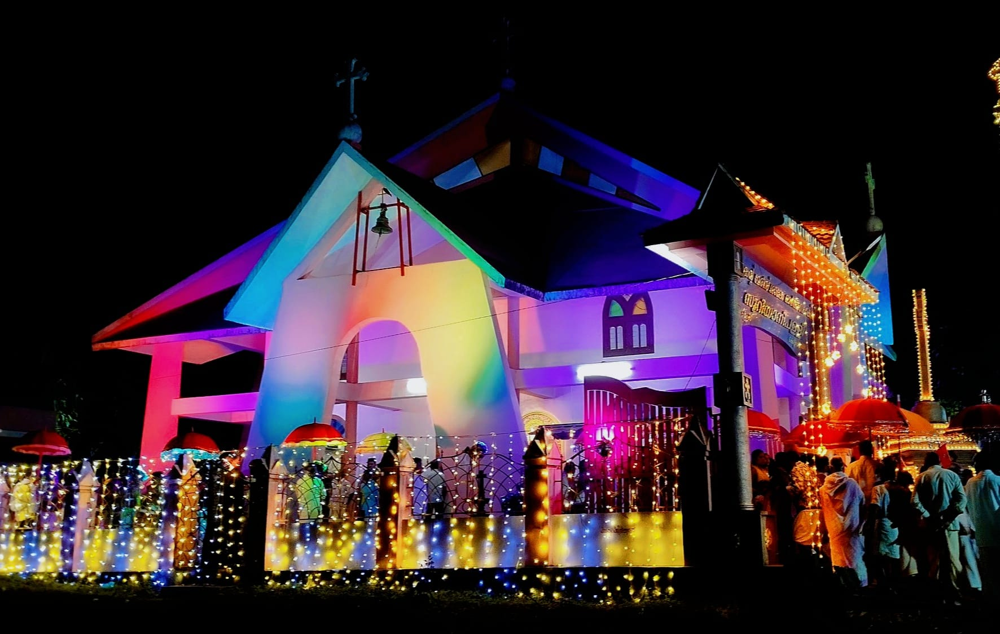
The original Malayalam history of the parish, preserved from the church souvenir magazine, is presented below to maintain its authenticity and historical accuracy.
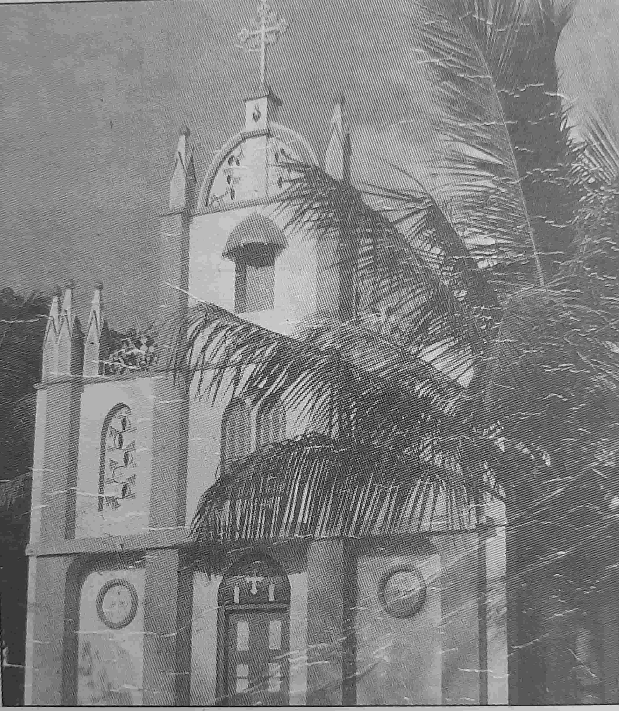
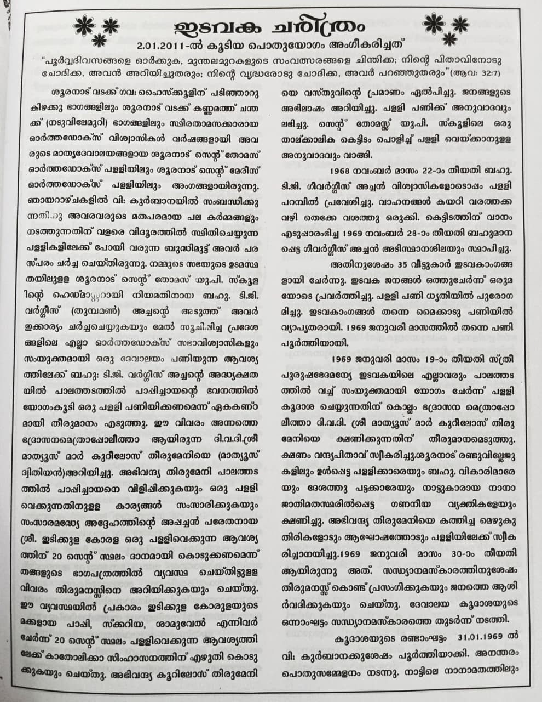
Page 1
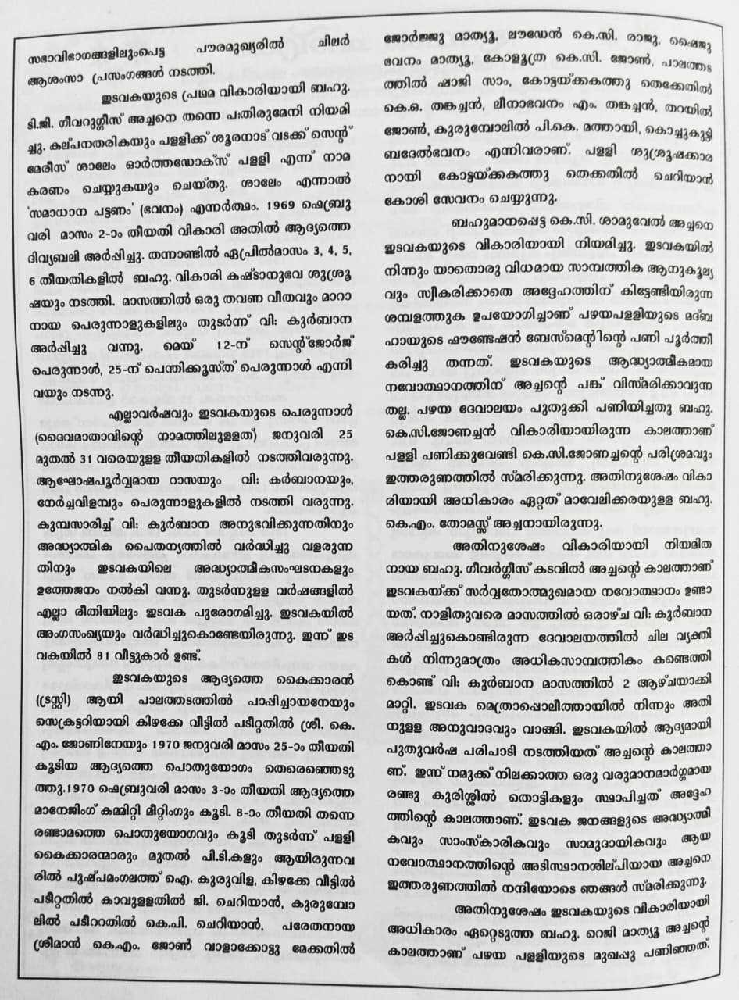
Page 2
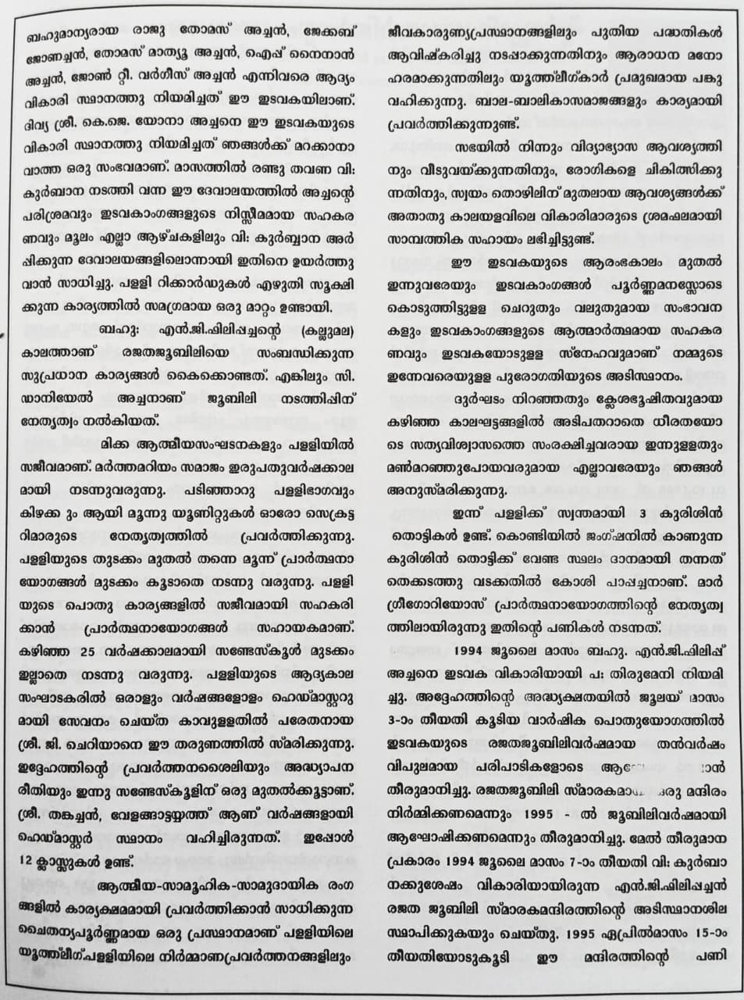
Page 3
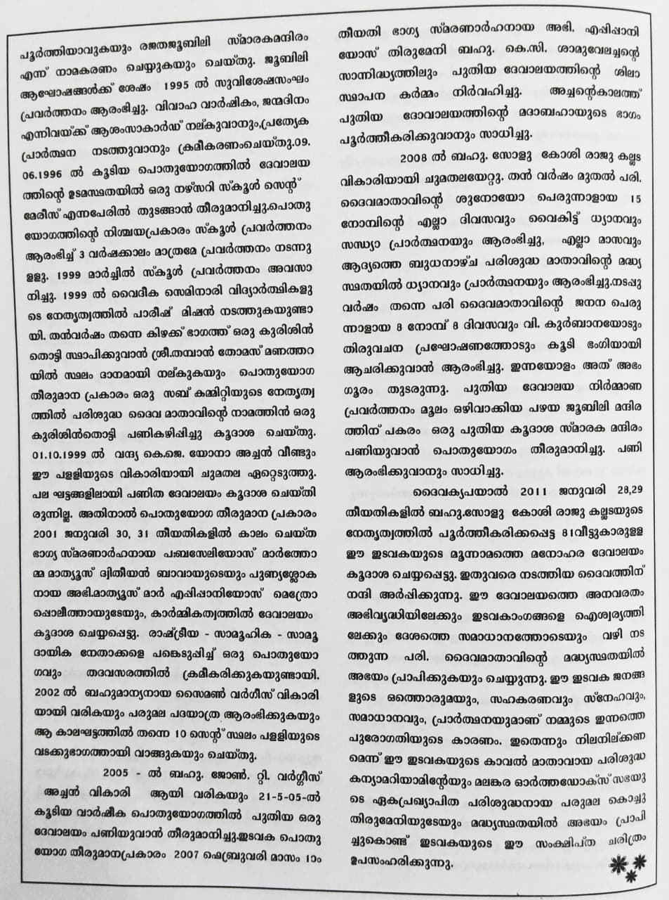
Page 4
Detailed church history from our magazine
✟ September 1 - September 8, 2026 ✟
Join us for the sacred Ettu Nombu Perunnal celebrations at St Mary's Salem Orthodox Syrian Church, Sooranad North. All are welcome to participate in the divine services.
Dedicated leaders serving our parish community
Vicar
Trustee
+91 9847490332
Secretary
+91 9947011534
Active ministries nurturing faith and fellowship
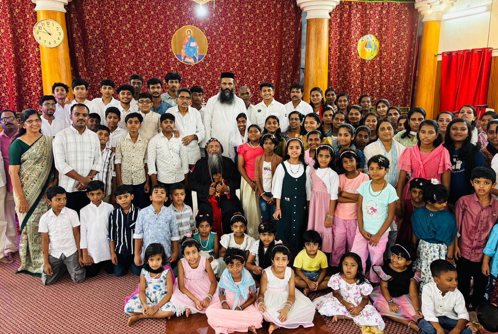
Nurturing young minds in Christian faith and values. Our Sunday School provides age-appropriate Biblical education, helping children grow in their relationship with Christ through engaging lessons, prayers, and activities.
Empowering women through faith, fellowship, and service. The Martha Mariyam Samajam brings together women of our parish for spiritual growth, charitable activities, and supporting church missions.
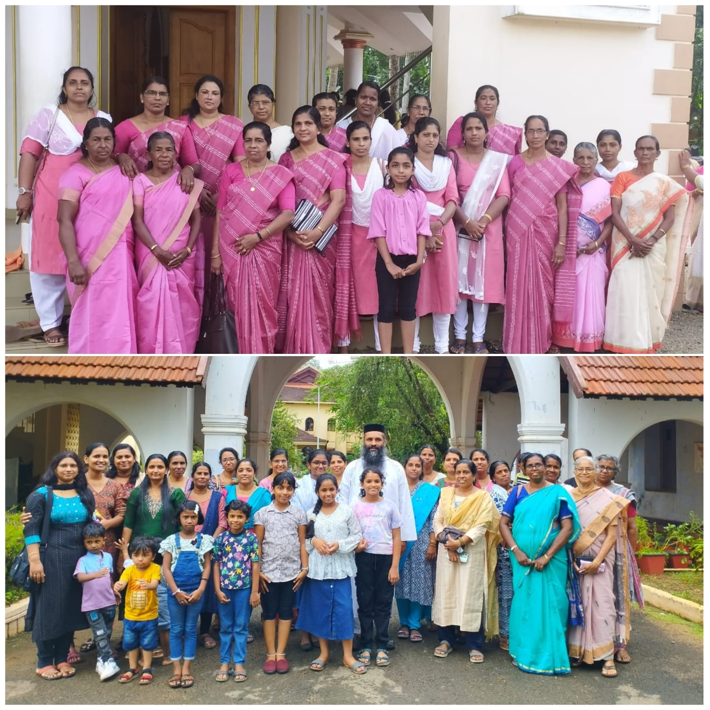
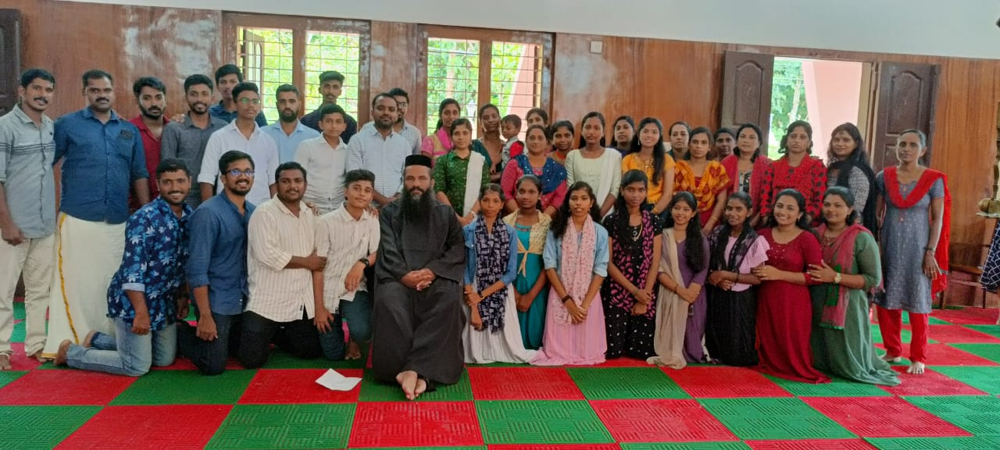
Inspiring and equipping young adults to live out their faith boldly. Our Youth Movement provides opportunities for spiritual development, leadership training, and community service through various programs and activities.
AMOSS (Akhila Malankara Orthodox Shusrushaka Sangham) is a spiritual movement that trains and guides altar servers, promoting discipline and uniformity in church worship. Through regular training programs and conferences, it nurtures dedicated youth to serve the Holy Church.
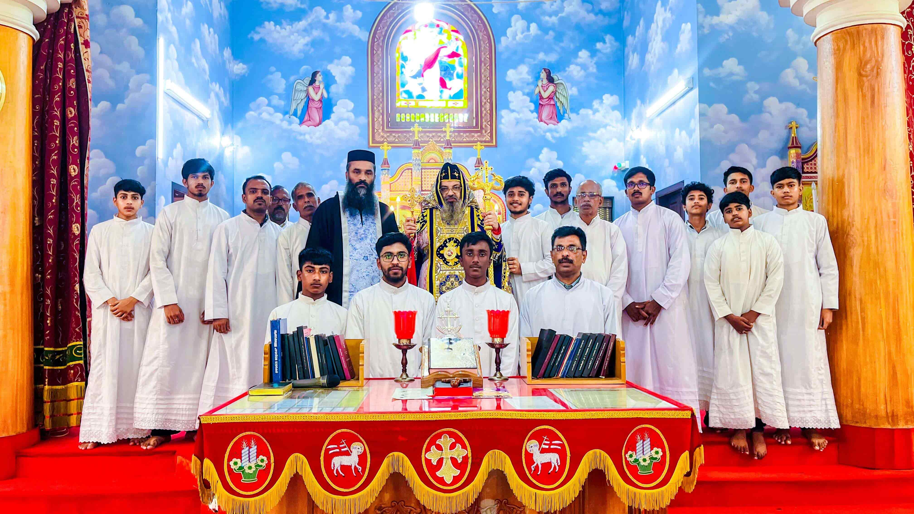
A dedicated prayer fellowship fostering deep spiritual communion and intercession. Our prayer warriors gather regularly to lift up the needs of our parish, community, and world through fervent prayer and worship.
Nurturing young hearts and minds in Christian values and Orthodox traditions. Balasamajam provides a vibrant platform for children to learn, grow, and express their faith through activities, competitions, and fellowship.
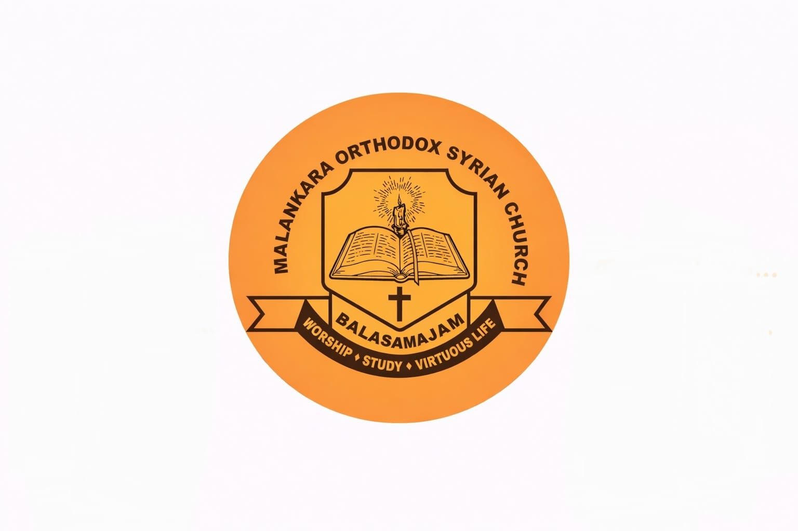
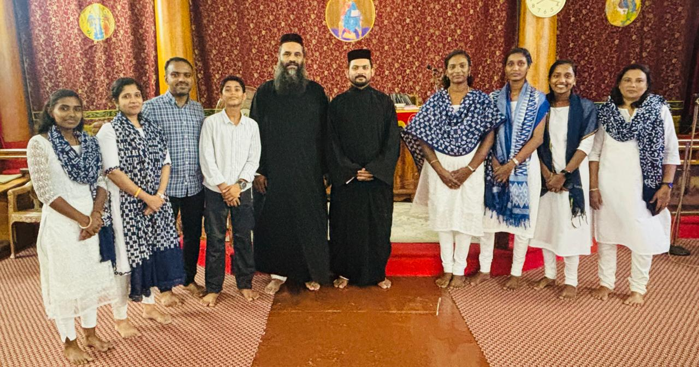
Leading our congregation in worship through sacred hymns and traditional Orthodox chants. Our dedicated choir enriches the Holy Qurbana and special services with beautiful liturgical music that glorifies God.
Caring for God's creation through environmental awareness and sustainable practices. Our commission promotes eco-friendly initiatives, organizes clean-up drives, and educates the parish on stewardship of our natural resources.

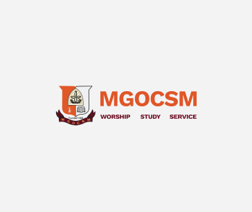
Mar Gregorios Orthodox Christian Student Movement (MGOCSM) is the student wing of the Malankara Orthodox Syrian Church. MGOCSM provides mentorship, spiritual guidance, and opportunities for students to grow as faithful witnesses in their educational journey.
Operating as the vibrant young women's wing of the Marth Mariam Vanitha Samajam (MMVS), the Chaitanya Samskarika Vedi is dedicated to engaging the young women of our parish in spiritual leadership and community life.
A spiritual fellowship of the Malankara Orthodox Syrian Church that promotes faith, fellowship, and service among members aged 40–60. Through monthly prayer meetings, spiritual discussions, the Forum encourages active participation in the life and mission of the Church.
Moments of faith and fellowship

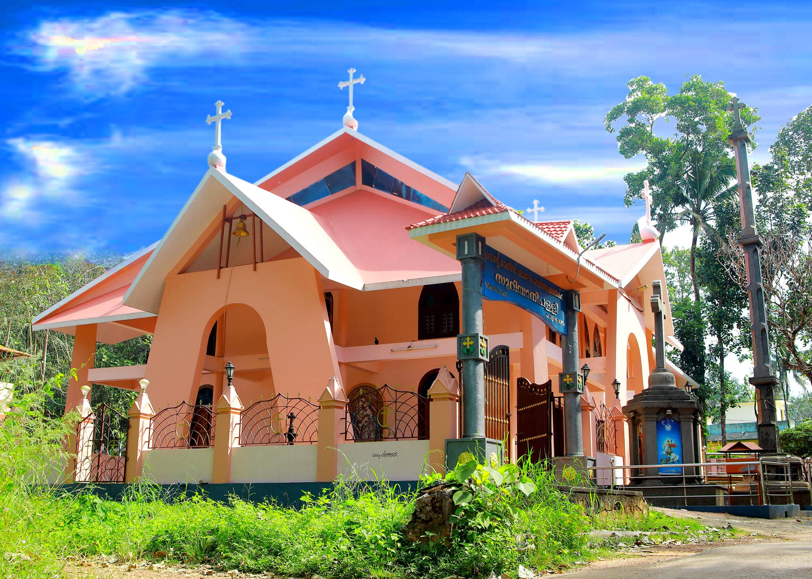

We'd love to hear from you
St Mary's Salem Orthodox Syrian Church
Sooranad North
Kerala, India
+91 7510905469
info@stmaryssalemsooranad.org
Holy Qurbana: Sunday 6:30 AM
Evening Prayer: Saturday 6:00 PM